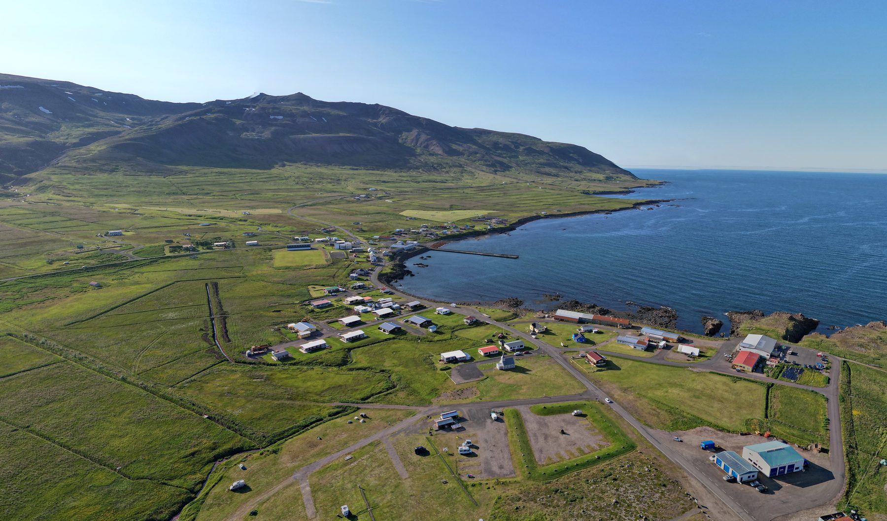

JV announced · Iceland
Scale42's flagship Icelandic site, in joint venture with GIG. Geothermal baseload with robust grid integration and an industrial-ready footprint. Operational from 2027 at 50 MW initial capacity, scaling to 200 MW.

Site specification
Location
An industrial-ready site adjacent to Iceland's geothermal generation, with deep-water port access and direct subsea fibre routes to Europe and North America.
Next steps
Hyperscalers and AI labs evaluating Iceland — we'll send a full RFI pack including grid letters, fibre diagrams and PUE methodology.
Request RFI pack →